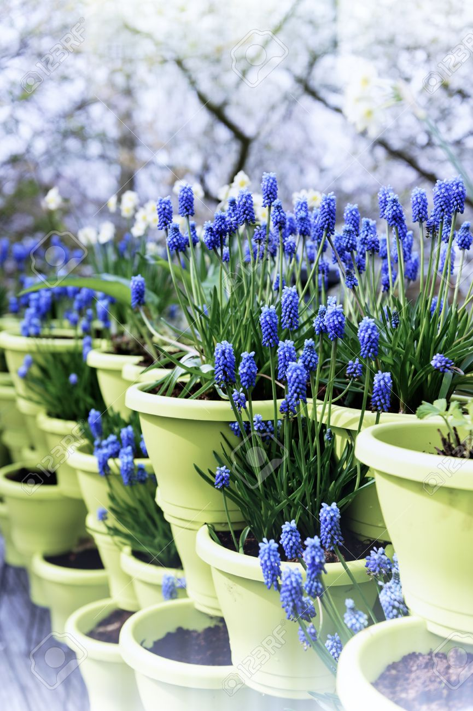

Fig.Bluebell
Hyacinthoides non-scripta (formerly Endymion non-scriptus or Scilla non-scripta) is a bulbous perennial plant, found in Atlantic areas from north-western Spain to the British Isles, and also frequently used as a garden plant. It is known in English as the common bluebell or simply bluebell, a name which is used in Scotland to refer to the harebell, Campanula rotundifolia. In spring, H. non-scripta produces a nodding, one-sided inflorescence of 5–12 tubular, sweet-scented violet–blue flowers, with strongly recurved tepals, and 3–6 long, linear, basal leaves.
Bluebells are widely planted as garden plants, either among trees or in herbaceous borders.They flower at the same time as hyacinths, Narcissus and some tulips. Their ability to reproduce vegetatively, using bulb offsets and seed, means that they can spread rapidly, and may need to be controlled as weeds.
The bluebell may be regarded as the United Kingdom's "favourite flower". When the wild plant charity Plantlife organised a survey in 2004 to find a favourite flower for each county in the United Kingdom, it decided to ban voters from choosing the bluebell because it had been by far the top choice in an earlier poll for the nation's favourite flower.
Six types of bluebell flower
English Bluebell:These are also called ‘British bluebells and are native to England and France. These breathtaking purple-bluish flowers have been gracing and beautifying wooded areas and gardens as early as the 1500s.
English bluebells have a wonderfully soft and fresh fragrance that fills in and saturates the air as soon as it comes into contact with it.
Known as a late-blooming spring bulb, the Spanish Bluebell is native to the Iberian Peninsula and is quite similar to the English Bluebell in various ways. These flowers are rarely found in woodlands because they tend to bloom in open areas.
An important thing to take care of when growing these flowers is that they grow well in partial shade or sunlight, so it is best to grow them under full sun in the North with partial shade coming from the South.
This is an ephemeral plant of the spring that is native to Eastern North America and has bell-shaped sky blue flowers with gray-green rounded leaves.
Virginia bluebells grow to an average height of 18-24 inches tall and ideally bloom in early to mid spring. They continue blooming and bursting with striking colors all the way through early to mid summer, given that the growing conditions are just perfect.
This variety of bluebells is also known as ‘harebells’, a name that has its roots well placed in magic. It basically stemmed from the fact that Scottish Bluebells commonly grows in those meadows that are surrounded by hares. The name has quite a few fascinating theories attached to it.
Scottish bluebells are primarily distributed in the Northern Hemisphere from where they make their way to Europe from the North Mediterranean.
he name “Campanula” is Latin for “little bell” and is a highly diverse genus with over 500 species that are distributed across subtropical regions of the Northern Hemisphere and further extending to mountains of Africa and Asia.
This is a hybrid species of bluebells that is a cross between the common bluebell and the Spanish bluebell. These are two parental species that make the hybrid bluebell cross.